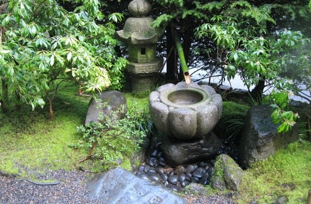
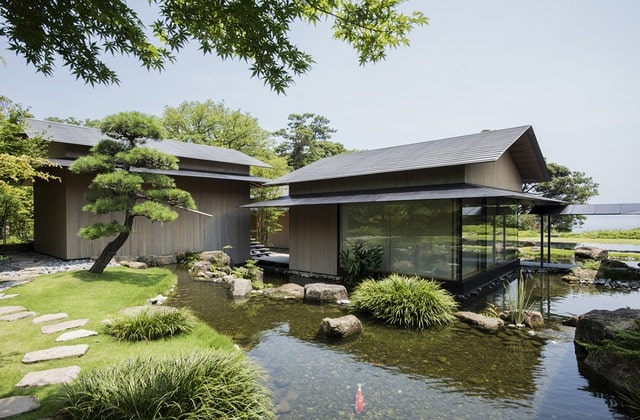
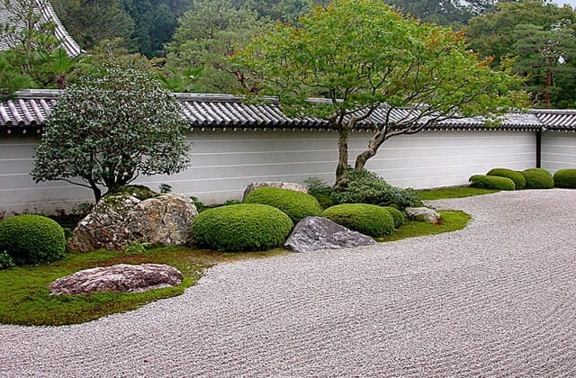
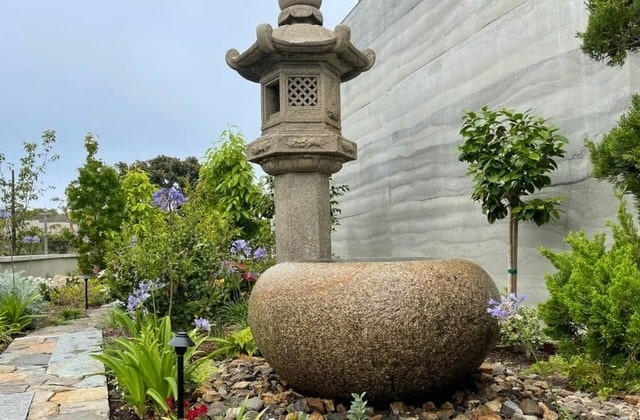
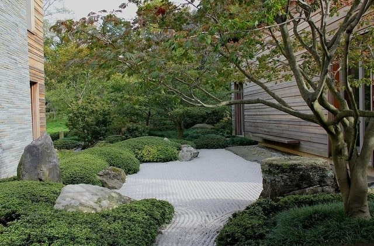
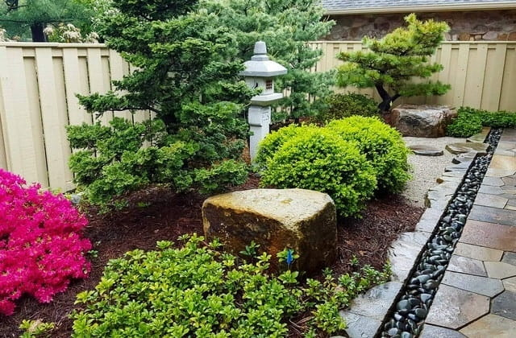
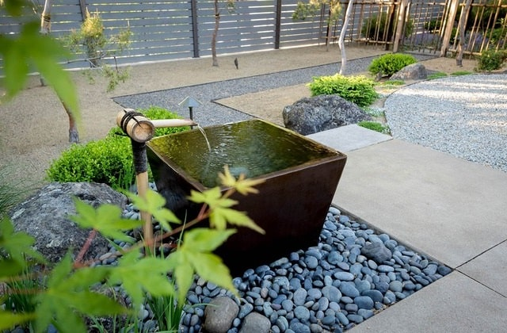
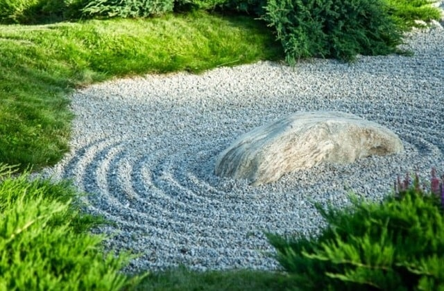

Focus on Low Maintenance and Sustainable Gardens
The importance of low maintenance and sustainable gardens for Calgarians cannot be overstated. In fact, the need for areas of peace and quiet within our city and urban homes grows exponentially every year. Japanese style landscaping and Zen gardens, with their minimalist yet profound design, offer a respite from the chaos of everyday life. They serve as a reminder of the beauty and serenity that nature offers, promoting mindfulness and relaxation. Ishidoro Zen Gardens understands this intrinsic value of Zen gardens. We believe in their power to transform spaces and lives. By incorporating rocks, water features, moss, pruned trees and bushes, and raked gravel or sand, we create landscapes that are pleasing with a sense of calm. Each garden we create is a reflection of the Zen principles of simplicity, naturalness, and austerity. We have transformed disappointing spaces into Japanese Zen gardens, each unique yet echoing the same principles of harmony and balance. With passion and dedication, our work is a testament to our commitment to bringing the serenity of Zen to the heart of Calgary, adding a new chapter to its rich history.
Not Just Another Landscaping Company Out There
Ishidoro Zen Gardens is not just another landscaping company out there, but a purveyor of serenity. Through our work, we bring the Zen approach to Calgarians, both for private homes and public spaces, enhancing the quality of life of our clients while contributing to the overall well being of our communities. We provide a factual means to help get rid of stress and anxiety. Our company was born out of a deep appreciation for the art and philosophy of Japanese style gardens and Zen dry landscaping; and a desire to bring their benefits closer to our bustling city. The founder, inspired by the serene beauty of traditional Japanese Zen gardens, envisioned a modern landscaping company that could transform spaces into magnificent landscapes, without breaking the bank, on a journey to a stress free environment. You can hire us to bring the Japanese essence and tastefully fine elegance of stones, lanterns, gardens and Zen landscapes into your home. Check out our summary with the Top 10 Questions.
Inspiration Behind Ishidoro Zen Gardens
The inspiration behind the creation of Ishidoro Zen Gardens was twofold. Firstly, the founder recognized the therapeutic benefits of Japanese style gardens in a world increasingly dominated by technology and fast paced lifestyles. Secondly, he was inspired by the aesthetic appeal of Zen dry gardens. With their minimalist design and natural elements, Zen dry gardens are a visual treat, offering a stark contrast to the "concrete jungles of urban landscapes covered by unsustainable lawns". The journey from inception to the present day has been an exciting path of steady growth and learning for us. Starting with a crew of two passionate landscapers, the company has plans to continue to grow, to include a diverse team of experts in the field of Zen dry landscaping. Over the years, we have honed our skills and deepened our understanding of the principles of Japanese gardening and landscaping along with a deep respect of Zen philosophy. This solid ground enables us to create gardens that are unique and striking.
Japanese Zen Gardens Have a Beauty of Their Own
Creating a Japanese or Zen styled garden and landscape requires both time, effort and skills. Traditionally, they incorporate water, sand, gravel, stones, rocks, boulders, hills, bridges, streams, fish, paths, stone lanterns (Ishidoro), moss, ponds, statues, gates, basins, trees, bamboo and fences. Its beauty is present in spaces such as a small yard, a balcony, an office box, or a window box. There are no hard rules: You are free to create and unite the beauty of Japanese landscaping and gardening one step (or project) at a time. Check our list of suggested Landscaping Themes. Our clients can get premium offers and services for their dream Japanese and Zen styled landscaping design versus their actual budget. Alternatively, if you would like to learn more about our ideas for a Public Japanese Garden in our city, please visit our Blog: Zen Landscaping in Calgary.
What Exactly Does Ishidoro Zen Gardens Do?
We design, create, and maintain striking and elegant Japanese Zen styled gardens and landscapes both for private and public spaces. Ishidoro Zen Gardens aims at beautifying homes and businesses, and offering professional landscape architecture services. Its founder is an experienced professional with a background in construction and real estate property management. He knows for a fact that landscaping projects that enlarge living space and require low maintenance while adding beauty to a property rank at the top, and increase a home resale value by 15 percent to 20 percent. We plan to become Calgary's premier Japanese landscaping company despite the challenges in creating gardens in Calgary's unique environment. This has been done with great success in Edmonton and Lethbridge; and there are more than 300 public Japanese gardens in North America. Click to find out where they are: World Japanese Garden Database.
Why Did We Name Our Company Ishidoro Zen Gardens?
In Japan, a stone lantern (or Ishidoro) represents the four natural elements of fire, water, earth, and wind. It is believed that these elements together make unique gardens. Broadly, stone lanterns are carved in a variety of shapes, sizes and styles. In fact, Japanese stone lanterns are not meant to provide functional lighting at night. Rather, they do not alter the ambience of the night. Nevertheless, a Japanese lantern can be made of stone, wood, metal, concrete, plastic, resin, ceramic, or paper. In Japanese gardening, stones are essential for a balanced landscape. A real estate property, whether new or longstanding, that is well designed, built, and maintained, will increase its value by incorporating the beauty of Japanese Zen styled gardens and landscapes, not just by planting flowers or mowing the lawns. For this reason, traditional Japanese style gardening, trimming, hedging, pruning, planting, gravelling, ponding, etc. adds as much or even more value to your property. Ishidoro Zen Gardens is to become the number one choice for real estate owners, property managers and government agencies when it comes to Japanese Zen styled gardens and landscapes.
What Type of Japanese Garden Should Your Special Space Be?
In Japan, gardens evolved based on the common belief that forests, mountains, and the sea were home to nature spirits, and included elements such as ponds, streams, waterfalls, rocks, and vegetation. Thus, they were originally created for ceremonies honoring spirits believed to have come from heaven, or from across the sea. Later on, they became a play area for the privileged, and a vehicle for something more profound for monks and warriors as well. Evidently, the simplicity of dry Zen gardens contrasts the abundance of plants in stroll gardens. The choice is yours to make! For example, for your next landscaping contract, we can start by incorporating a tsuboniwa (approximately 3.3 square meter garden) to your home. After that, we could add a karesansui (dry rock, or Zen garden), or maples, or cherry trees.
Our Warranty, Your Protection
In order to guarantee that you get top quality and protection, Ishidoro Zen Gardens is fully committed, licenced, insured, bonded. For a Japanese garden to be viable in Calgary, we will select those plants and trees that are native to our geographic setting, and can endure the local climate while still providing the appeal of a traditional Japanese garden and landscape. For example, here in Alberta, for a tranquil space that harmonizes with nature, we have a wide variety of pine trees, shrubs, and ground covering plants that are easy to source at local shops and nurseries. Also, rhododendrons and azaleas have hardy varieties that can last in Calgary. We will provide advice on selecting plants, designing the layout, and maintaining the garden. Learn a bit more about the City of Calgary's YardSmart: Trees and Shrubs.
City of Calgary
Business License
Province of Alberta
Prepaid Contractor
Insurance Coverage
General Liability
One Year Warranty
On All Workmanship
Tailored to Meet and Exceed Our Clients' Expectations
Ishidoro Zen Gardens incorporates Zen in a way that honors its origins, and adapts its principles to meet the the needs and preferences of our clients. We use local plants, trees and materials to create a garden that is sustainably recognized as traditional Japanese, but with a strong sense of modern Calgarian. Therefore, it is a perfect blend of tradition and innovation. We fully understand that each garden is a very private matter that should reflect the personality and lifestyle of the owners. Therefore, we work closely with each customer, taking into consideration their ideas and preferences, to create gardens that are both visually stunning and personal.